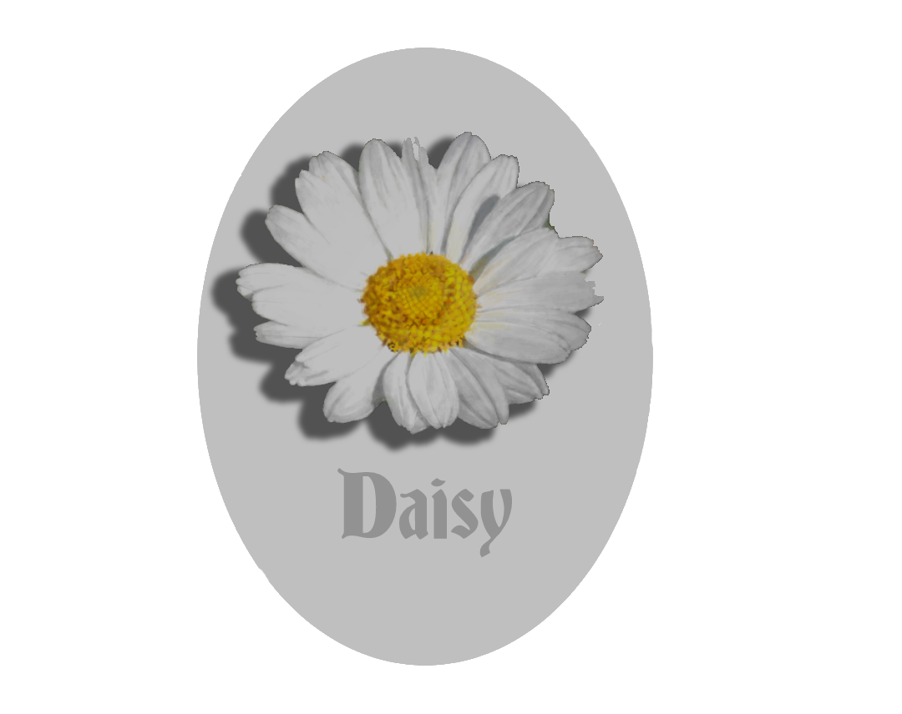
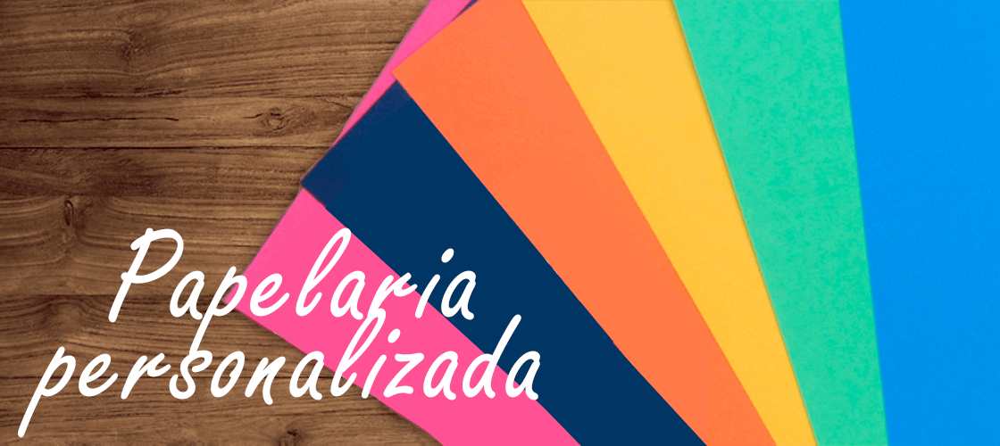

Apesar de relativamente pequena, Camaçari possui uma grande importância para toda a Bahia. É a quarta cidade mais populosa do estado e tem o segundo maior Produto Interno Bruto baiano, ficando atrás apenas de Salvador BA. Com tamanha imponência, a Daisy Personalizados, também marca presença com sua linha de brindes personalizados para empresas da região, produzindo brindes executivos para Camaçari, Salvador, Vitória da Conquista, Feira de Santana e as cidades mais próximas.
